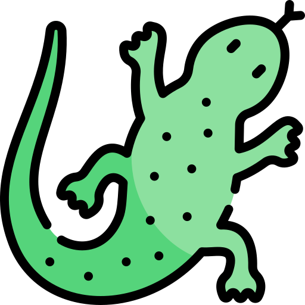
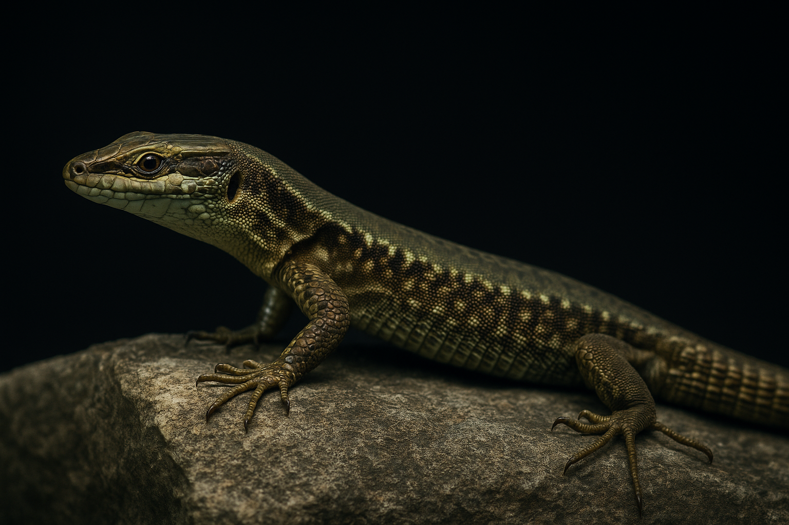

Bienvenue sur Le Lézard des Jardins 
Vous êtes sur la page d'accueil du site, ce projet web a été créé dans le cadre de la candidature pour la Web@cadémie .
Vous trouverez des informations sur le lézard des murailles, quelques clichés de celui-ci, ainsi qu'un mini jeu.
